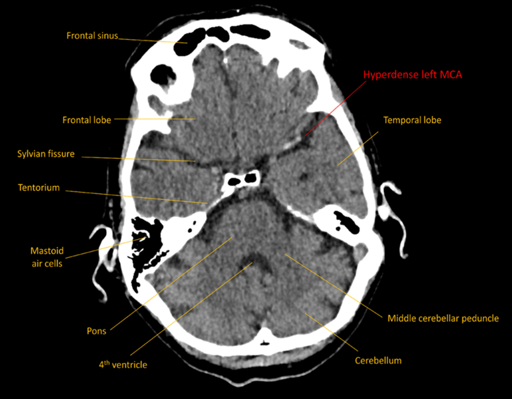
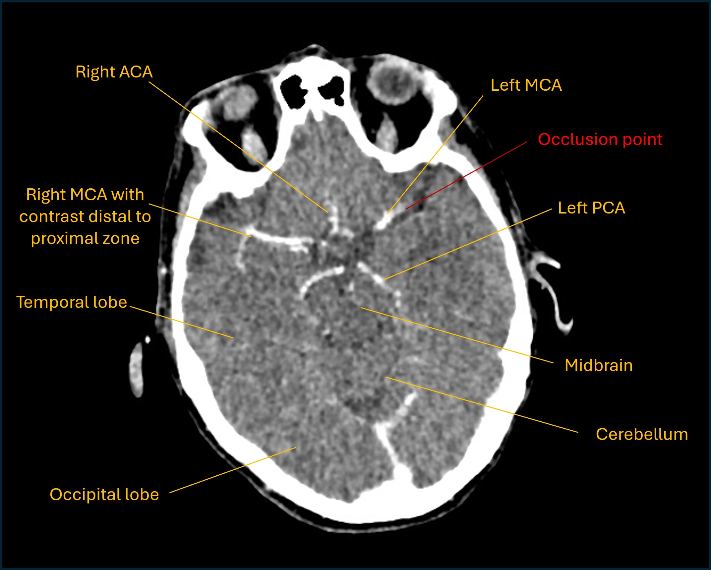
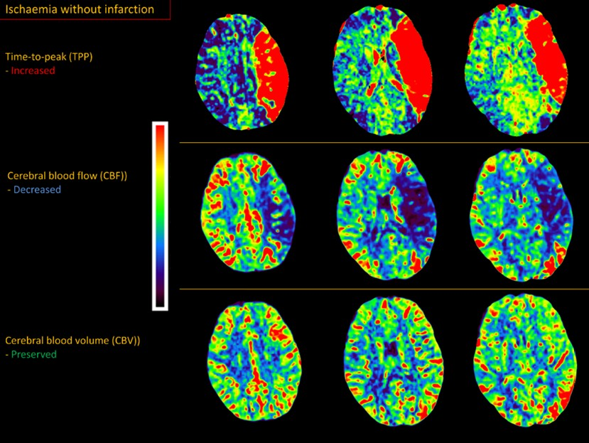
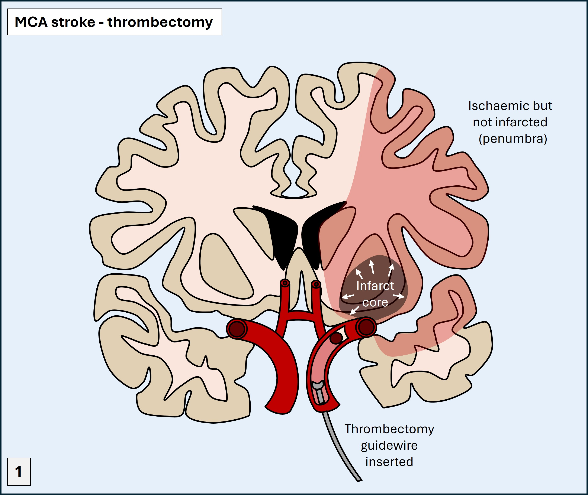
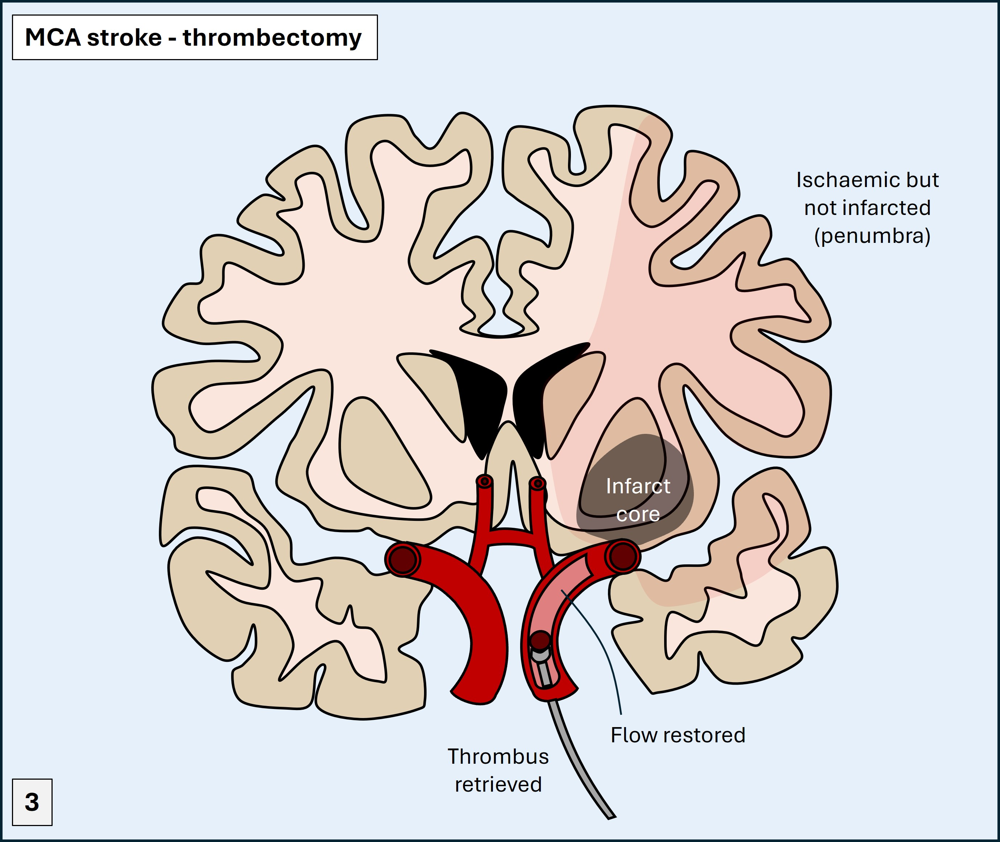
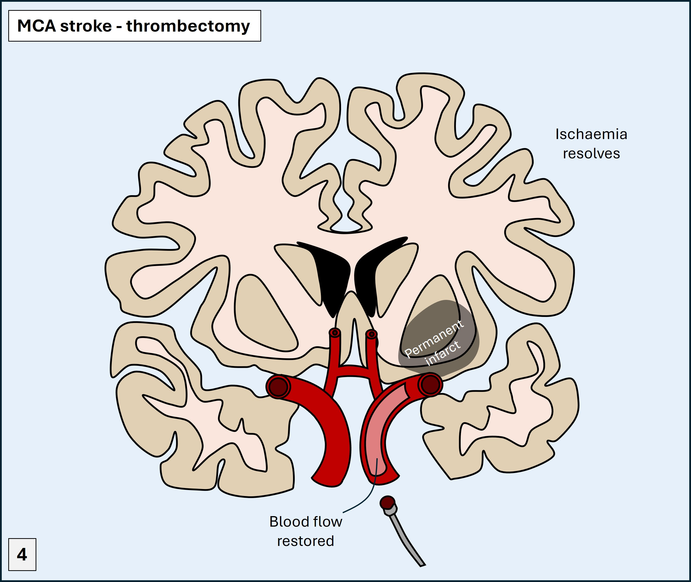
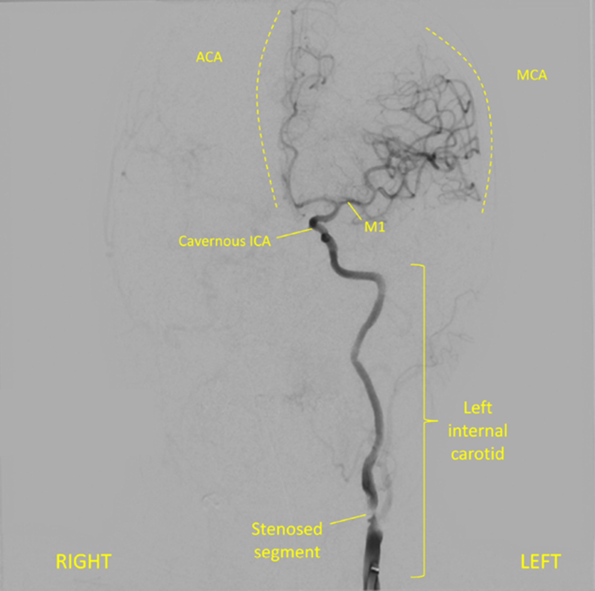

Case 1. Right-sided weakness and inability to speak
Outcome
CT imaging showed no signs of acute haemorrhage. There were changes consistent with early ischaemic changes in the left hemisphere in the MCA territory, with subtle loss of grey-white matter differentiation around the insular territory, as well as hyperattentuation in the left MCA, suggestive of an occlusive thrombus.

This was confirmed on CT angiography, with occlusive thrombus sitting in the distal M1 segment of the MCA, all the way to its bifurcation into superior and inferior segments in the Sylvian fissure.

Her carotids were both significantly narrowed by atherosclerosis, particularly the left one - which was the likely source of the thrombus (artery-to-artery embolism).
Perfusion imaging indicated a small area of infarcted ‘core’ (30mL) in the deep subcortical white matter, and a large surrounding area of ischaemic, viable, ’penumbra’ (120mL). The ratio of the penumbra to the core - the mismatch ratio - was 4.6. This suggested a large area of brain under threat of infarction but not yet dead, supported by collateral vessels (for now) – amenable to rescue via reperfusion before the collaterals fail. The CT perfusion study is shown below; ischaemia without infarction is shown in the areas with increased time-to-peak (red), reduced cerebral blood flow (blue), but preserved cerebral blood volume (green). They very neatly trace the outline of the MCA territory - showing what a large lesion this is.

The patient was given thrombolysis with alteplase and underwent a thrombectomy, using a guidewire passed from the femoral artery backwards until within the cerebral circulation. The thrombus was retrieved leading to reperfusion in the recanalised vessel, as depicted below.



The restored MCA circulation after the successful clot retrieval is shown on the coronal angiogram below.

In the recovery zone the patient’s speech was improving and she had regained right-sided movements. She had a 48 hour hospital stay and was fully mobile and with full right-sided strength, but some minor residual hesitancy in speech.
The cause was carotid stenosis, and she underwent successful carotid endarterectomy a week after discharge.
At follow-up she remained well, with complete recovery of her speech and no residual neurological symptoms whatsoever - which is the best possible outcome after such a large stroke, thanks to prompt treatment.
Final diagnosisLeft MCA territory ischaemic total anterior circulation stroke (TACS), presenting with hemiplegia, combined dysphasia and hemianopia, due to a left carotid stenosis – with complete recovery after reperfusion therapy, and a successful carotid endarterectomy later.
Key points:Return to Cases